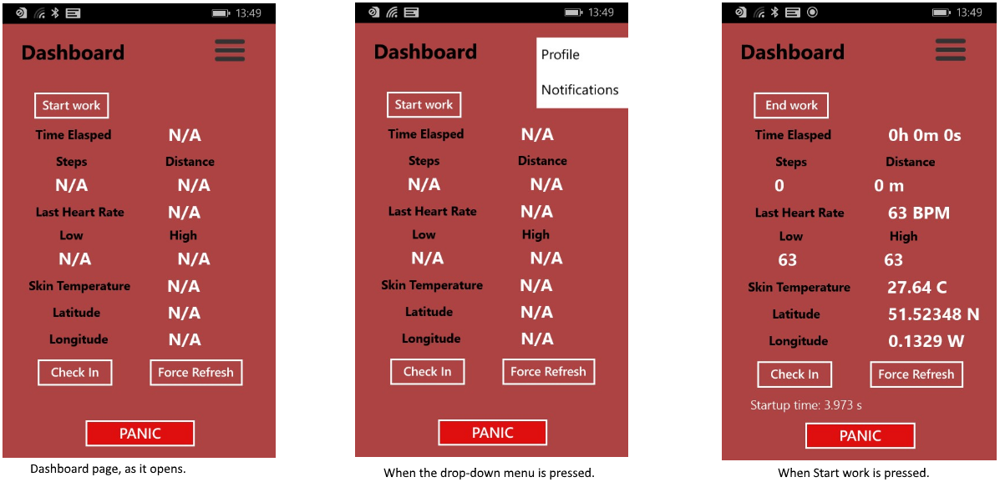
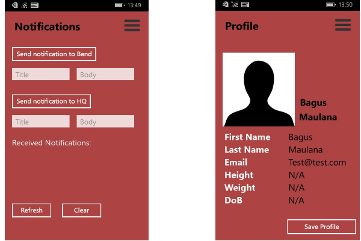

Functionality Prototype
User Interface Prototype
Before creating our first prototype UI representation, we went through a few different mock-ups in order to explore the possibilities and see which design would suit the project better. We firstly, tried to capture the essence of the application in a way which would enable us to not only implement the most important must have requirements of our project but would also be able to potentially include a whole array of functionalities, which might not be the main focus points in the early parts of the development.
The first part of the UI is a "Log In” page which might not be included in the requirements as it wasn’t specified in the LoneWorker project but it is very much directly linked to a lot of the other requirements and it is essential to the application and the aforementioned ability to potentially include the desirable functionalities. It offers the basic features that one would expect from such a page, which we nowadays come across so often, basic Logging in, creating an account and resetting password when that is necessary.
After logging there are three main pages, the dashboard, the profile and the notification page. It is quite easy to interchange between the pages, with the always showing tab at the bottom of the application which has three different icons representing the different pages. Moving forward the page designed to be the home page, is the dashboard which contains the Microsoft Band readings from a range of selected sensors depending on their benefits in the LoneWorker concept. This is designed to be the home page for the application, as it not only provides important information but also contains the most important functionality of the application, which is the “Panic Button”, which alerts the headquarters of an emergency.
The profile page, is as the name suggests the place where the information about the user is stored. The reason behind this page, is the necessity of personalisation of the app and the different ways Microsoft Band acts depending on some of the characteristics of the user, like weight and height. Also later on, as we tackle more complicated and less fundamental requirements, this page will become even more important, so it’s again partly being prepared for expansion (requirements like “measuring and displaying 'mood colours' based on personalised heart rate comparison and stress levels”)
The final page, is the notifications page, which is responsible for keeping a direct line of communication between the user and the headquarters or any other concerned party (sending and receiving notifications). It is also where the “Panic Button” links to when it’s pressed from the dashboard, as it sends an emergency message to the HQ.
Last but not least, there will be a few additions made to the already existing Microsoft Band UI tiles that will allow the user to access certain features from the Band without the need to use their mobile phone, as requested by the client. We will add the "Panic Button" as shown in the prototype below (the far right tile) which similarly to the panic button on the dashboard page, sends an emergency alert to the Head Office. Moreover we will add and a messaging tile (the second one from the right) which is where the user receives the alerts and messages from the Head Office, similar to the Notifications page on the mobile application.

User Interface as Used in Application
Overall, not much has changed from the UI prototypes shown above. A lot of work was put into them and even though they were designed for a potential android, the change to windows application hasn't resulted in many changes. One important change, was the removal of the three icons at the bottom of each page, which were in place for navigation between the pages. They were replaced by the three line icon, which is very regularly used for a drop-down menu, especially in windows applications. Something we thought would look better and would give our application that windows feel to it.
A very similar interface was created to match the one created as a prototype, for the Dashboard. The main page in our application, where most information and basic functionality of the app can be found. As such we considered the options and decided that as designed in the prototype would suit and cover our needs for the application. As mentioned, the three line drop-down menu is implemented at the top right corner. Further differences from the original prototype are the Start, refresh and check-in button, which are in place to direct the data gathering as per button title and send a message to the headqaurters (check-in).
Following the dashboard, we have the notifications page, which is responsible for sending and receiving messages to and from the head office. This isn't very similar to the original User Interface which we felt was too complicated and too time consuming. For the purpose of the loneworker application, we wanted to enable the user to be able to contact help as soon as possible. We have thus added, two potential destinations for sending messages from the phone, one to the microsoft band and one to the head office. Simply by adding a title to the message and then typing the body of the message and pressing send. Also at the bottom part of this page are stored all messages received.
Finally we have the profile page, which has in principle remained exactly the same as it was designed in the original prototype. The only difference is as it were with the other pages, the basic UI change of the drop-down menu at the top right hand corner.
